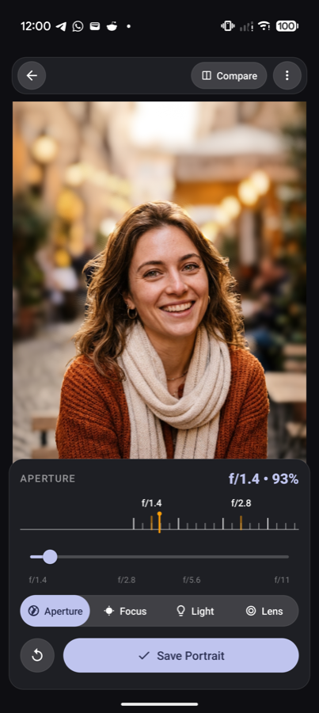
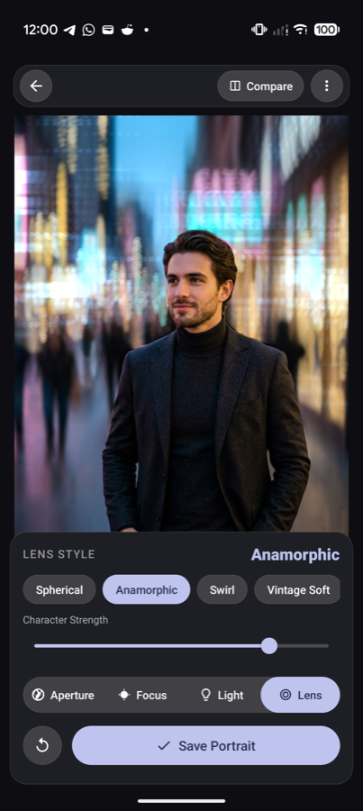
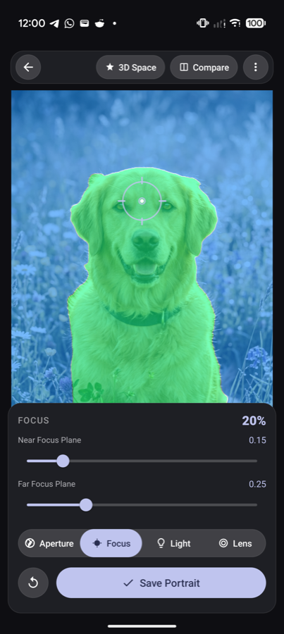
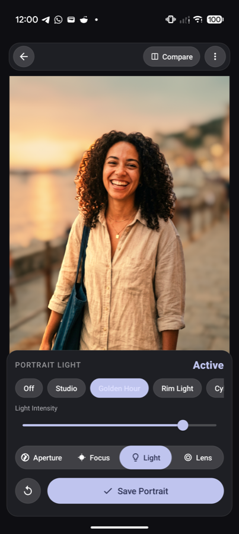
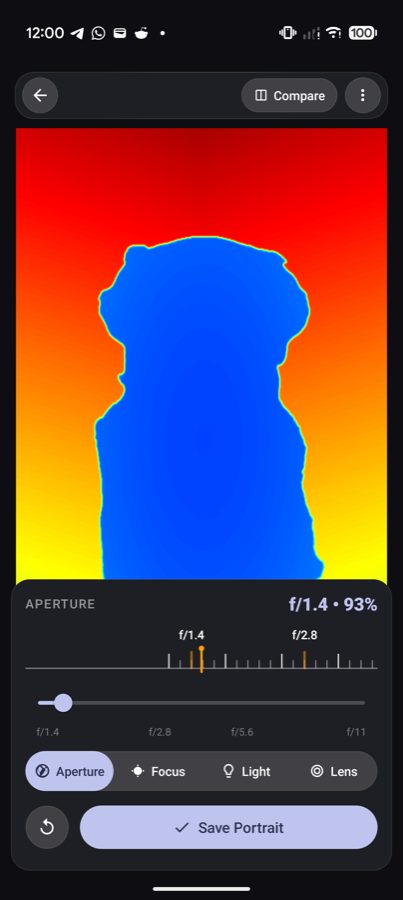
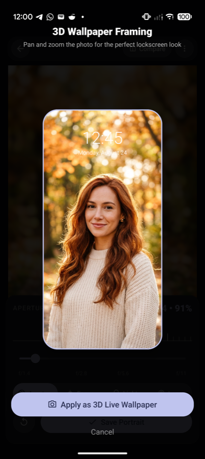

Version 1.0 · Android 14 oder neuer
Version 1.0 · Android 14 or newer
Fokus ist eine Entscheidung, die du später treffen darfst.
Focus is a decision you get to make afterwards.
Dein Telefon speichert in jedem Porträtfoto mit, wie weit alles von der Kamera entfernt war. Rebokeh liest diese Tiefenkarte aus und rechnet daraus echtes optisches Bokeh: Blende stufenlos von f/1.4 bis f/22, Schärfepunkt per Fingertipp, vier Objektiv-Charaktere. Alles auf dem Gerät, nichts in der Cloud.
Your phone already records how far away everything was when you shot a portrait. Rebokeh reads that depth map and renders real optical bokeh from it: stepless aperture from f/1.4 to f/22, tap anywhere to refocus, four lens characters. All on the device, nothing in the cloud.
Zwei Schritte: der Google-Gruppe beitreten, dann das Opt-in bestätigen. Zusammen etwa zwei Minuten.
Two steps: join the Google group, then confirm the opt-in. About two minutes in total.






Warum ich gerade dich brauche
Why I need you specifically
Kurz: wegen deines Telefons. Nicht wegen deiner Fotografie-Künste.
Short version: because of your phone. Not because of your photography skills.
Jeder Hersteller schreibt die Tiefendaten anders in die Bilddatei — Google anders als Samsung, Samsung anders als Xiaomi, und manche Modelle liefern gar keine. Ich kann das nicht am Schreibtisch testen: ich besitze ein Pixel und ein Samsung. Alles andere ist Vermutung.
Deshalb suche ich Tester mit möglichst unterschiedlichen Geräten. Je exotischer dein Telefon, desto wertvoller bist du für diese Beta. Ein einziges Porträtfoto, einmal durch die App geschoben, beantwortet mir die wichtigste Frage: Liest Rebokeh deine Tiefendaten korrekt?
Nebenbei: Google verlangt für die Veröffentlichung einer geschlossenen Beta mindestens zwölf Tester, die 14 Tage lang dabei sind. Du hilfst mir also doppelt — mit Daten und mit deiner Anwesenheit.
Every manufacturer writes depth data into the image file a little differently — Google differs from Samsung, Samsung from Xiaomi, and some models provide none at all. I can't test that at my desk: I own a Pixel and a Samsung. Everything else is guesswork.
So I'm looking for testers with devices as different as possible. The more unusual your phone, the more valuable you are to this beta. A single portrait photo, run through the app once, answers my most important question: does Rebokeh read your depth data correctly?
Also, for context: Google requires at least twelve testers staying in a closed beta for 14 days before it can go public. So you're helping twice — with data, and with your presence.
Besonders gesucht
Especially wanted
Geräte, die ich nicht selbst habe:
Devices I don't own myself:
Pixel und Samsung sind willkommen, aber dort weiß ich schon, dass es funktioniert.
Pixel and Samsung are welcome too, but I already know those work.
In vier Schritten dabei
Four steps to join
- Der Google-Gruppe beitreten Mit demselben Google-Konto, das auf deinem Telefon im Play Store angemeldet ist. Google verlangt diesen Schritt für geschlossene Tests — ohne Gruppe sieht dich der Play Store nicht als Tester.
- Join the Google group With the same Google account that's signed in to the Play Store on your phone. Google requires this step for closed tests — without the group, the Play Store doesn't recognise you as a tester.
- Opt-in-Link öffnen und bestätigen Ein Klick auf „Tester werden“, danach erscheint Rebokeh für dich ganz normal im Play Store.
- Open the opt-in link and confirm One click on "Become a tester", and Rebokeh then shows up in the Play Store as usual for you.
- Installieren und ein Porträtfoto öffnen Am besten eines aus dem Porträtmodus deiner Kamera.
- Install it and open a portrait photo Ideally one shot in your camera's portrait mode.
- Kurz Bescheid geben Ein Satz per Mail oder über „Feedback senden“ in der App genügt.
- Tell me how it went One sentence by email or via "Send feedback" in the app is enough.
Das hilft mir am meisten
What helps me most
- Gerät und Android-Version — damit ich weiß, worüber wir reden.
- Device and Android version — so I know what we're talking about.
- Erkennt die App bei deinen Porträtfotos eine Tiefenkarte, oder bleibt die Vorschau flach?
- Does the app find a depth map in your portraits, or does the preview stay flat?
- Wie flüssig lässt sich der Blendenregler bewegen — ruckelt es, wird das Telefon warm?
- How smooth is the aperture slider — any stutter, does the phone get warm?
- Sieht der Export genauso aus wie die Vorschau, in voller Auflösung?
- Does the export look like the preview, at full resolution?
- Stürzt etwas ab? Wo genau, und ließ es sich wiederholen?
- Does anything crash? Where exactly, and could you reproduce it?
- Was war im ersten Moment unverständlich? Genau das interessiert mich am meisten.
- What was confusing the first time round? That's the part I care about most.
Gefundene Fehler kosten dich nichts: Für jede ernstgemeinte Rückmeldung schicke ich dir einen Promo-Code für Rebokeh Pro, mit dem du ohne Exportlimit weiterarbeiten kannst.
Finding bugs costs you nothing: for every piece of genuine feedback I'll send you a promo code for Rebokeh Pro, so you can keep working without the export limit.
Was in der App steckt
What's in the app
Echte Optik statt Weichzeichner
Real optics, not a blur filter
Die Unschärfe wird in einer 3D-Engine physikalisch gerechnet: Lichtpunkte im Hintergrund werden zu Bokeh-Kreisen, der Verlauf folgt der Tiefenkarte statt einer Maske.
The blur is computed physically in a 3D engine: background highlights turn into bokeh discs, and the falloff follows the depth map rather than a cut-out mask.
Vier Objektiv-Charaktere
Four lens characters
Sphärisch für ruhige Porträts, anamorphotisch für den breiten Kino-Look, Swirl für den wirbelnden Vintage-Hintergrund, Vintage Soft für sanftes Glühen.
Spherical for calm portraits, anamorphic for the wide cinema look, swirl for that whirling vintage background, vintage soft for a gentle glow.
Licht nachträglich setzen
Add light after the fact
Relighting-Presets legen Key Light, Golden Hour, Rim Light oder kühle Akzente auf das Motiv — ebenfalls auf Basis der Tiefeninformation.
Relighting presets put key light, golden hour, rim light or cooler accents on your subject — again based on the depth information.
Bearbeitbar bleiben
Stays editable
Gespeicherte Bilder erscheinen in der Rebokeh-Galerie und lassen sich später weiter verändern — mit scharfem Original und allen Einstellungen, auch auf einem anderen Gerät.
Saved images show up in the Rebokeh gallery and can be changed later — with the sharp original and all your settings, even on another device.
3D-Parallax-Wallpaper
3D parallax wallpaper
Aus demselben Foto wird ein Live-Wallpaper, das sich mit dem Gyroskop deines Telefons leicht mitbewegt.
The same photo becomes a live wallpaper that shifts slightly with your phone's gyroscope.
Sechs Sprachen, Tablets inklusive
Six languages, tablets included
Deutsch, Englisch, Spanisch, Portugiesisch (BR), Türkisch und Arabisch; das Layout folgt Material 3 Expressive und passt sich Tablets und Foldables an.
German, English, Spanish, Portuguese (BR), Turkish and Arabic; the layout follows Material 3 Expressive and adapts to tablets and foldables.
Häufige Fragen
Frequent questions
Welche Fotos funktionieren?Which photos work?
Am besten Aufnahmen aus dem Porträt- oder Bokeh-Modus deiner Kamera-App — dort speichert das System die Tiefendaten mit. Normale Schnappschüsse ohne Tiefeninformation kann Rebokeh öffnen, aber das Ergebnis bleibt flach. Genau diese Grenze möchte ich über viele Geräte hinweg ausmessen.
Shots from your camera app's portrait or bokeh mode work best — that's where the system stores depth data. Rebokeh will open an ordinary snapshot without depth information, but the result stays flat. Mapping exactly where that line sits across many devices is the point of this beta.
Was passiert mit meinen Fotos?What happens to my photos?
Sie bleiben auf deinem Telefon. Rebokeh rechnet vollständig lokal, lädt nichts hoch und hat kein Backend. Ich sehe deine Bilder nur, wenn du mir eines ausdrücklich schickst — was bei einem Fehler manchmal hilft, aber nie erforderlich ist.
They stay on your phone. Rebokeh renders entirely locally, uploads nothing and has no backend. I only see an image if you deliberately send me one — which sometimes helps with a bug report, but is never required.
Was kostet die Beta?What does the beta cost?
Nichts. Eingebaut ist eine 7-tägige Testphase mit bis zu drei Exporten pro Tag; Rebokeh Pro hebt diese Grenze auf. Wer mir Rückmeldung gibt, bekommt von mir einen Promo-Code für Rebokeh Pro — eine kurze Mail genügt.
Nothing. There's a built-in 7-day trial with up to three exports per day; Rebokeh Pro removes that limit. Send me feedback and I'll send you a promo code for Rebokeh Pro — a short email is enough.
Welche Android-Version brauche ich?Which Android version do I need?
Android 14 oder neuer. Die 3D-Darstellung nutzt aktuelle Grafik-APIs, die ich auf älteren Versionen nicht verlässlich testen kann.
Android 14 or newer. The 3D rendering relies on current graphics APIs that I can't test reliably on older versions.
Wie lange läuft der Test, und wie komme ich wieder raus?How long does the test run, and how do I leave?
Mindestens 14 Tage — so lange verlangt Google, dass zwölf Tester durchgehend dabei sind. Danach bleibt die Beta offen, bis die öffentliche Version steht. Austreten kannst du jederzeit: unten auf der Opt-in-Seite steht „Test verlassen“, und aus der Google-Gruppe kommst du über deren Mitgliedseinstellungen wieder heraus.
At least 14 days — that's how long Google requires twelve testers to stay opted in. After that the beta stays open until the public version ships. You can leave any time: "Leave the program" sits at the bottom of the opt-in page, and you can leave the Google group from its membership settings.
Sammelt die App Diagnosedaten?Does the app collect diagnostics?
Keine eigenen. Es gibt kein Analyse-SDK und keine Werbe-Bibliothek. Absturzberichte siehst du nur dann in der Play Console, wenn Android sie dir anbietet und du zustimmst — das läuft über Google, nicht über mich. Details stehen in der Datenschutzerklärung.
None of its own. There's no analytics SDK and no ad library. Crash reports only reach the Play Console if Android offers that to you and you agree — that's Google's channel, not mine. Details are in the privacy policy.
Bereit?
Ready?
Opt-in dauert zwei Minuten. Fragen gern vorher per Mail.
Opting in takes two minutes. Questions by email are welcome first.
Rechtliches: Datenschutzerklärung · Nutzungsbedingungen
Legal: privacy policy · terms of use